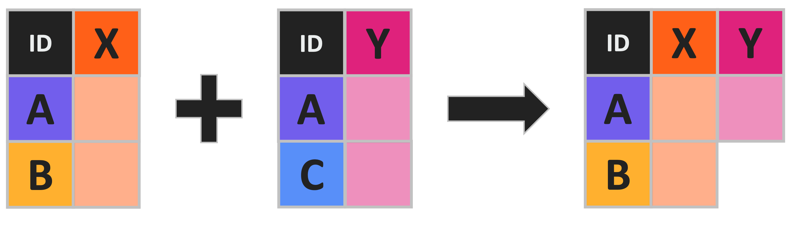
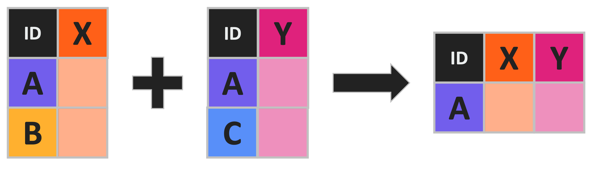
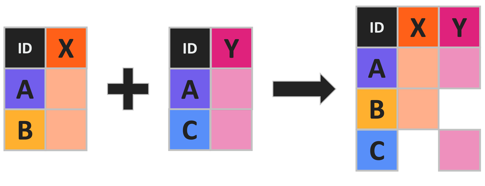

# Load needed library
library(tidyverse)Joining Data
Library Loading
Begin by loading any needed libraries.
Load the tidyverse meta-package.
Load the pandas and os libraries.
# Load needed libraries
import os
import pandas as pdCombining DataFrames
Sometimes we collected related data and store them in separate files. This necessitates integrating the two datasets later on for statistics and/or visualization. If the two datasets that are sampled at very different frequencies (e.g., annual temperature values and daily insect counts), trying to include both in a single file results in duplicating the less granular data many times. This is not ideal. Fortunately, scripted languages provide several methods for combining data easily and appropriately so that they can be used together despite being stored separately.
To illustrate some of these methods we’ll load some new simulated data on lichen coverage to use instead of the vertebrate data we’ve used in past modules.
Load the vertebrate data first.
# Load data
vert_r <- read.csv(file = file.path("data", "verts.csv"))
# Check out first few rows
head(vert_r, n = 2) year sitecode section reach pass unitnum unittype vert_index pitnumber
1 1987 MACKCC-L CC L 1 1 R 1 NA
2 1987 MACKCC-L CC L 1 1 R 2 NA
species length_1_mm length_2_mm weight_g clip sampledate notes
1 Cutthroat trout 58 NA 1.75 NONE 1987-10-07
2 Cutthroat trout 61 NA 1.95 NONE 1987-10-07 Then load the dataset with lichen community composition on trees.
# Load data
lich <- read.csv(file = file.path("data", "tree_lichen.csv"))
# Check out rows rows
head(lich, n = 2) tree lichen_foliose lichen_fruticose lichen_crustose
1 Tree_A 1.00 0.9 0.95
2 Tree_B 0.35 1.0 0.00And finally load the data that includes distance from the nearest road for some of the same trees for which we have lichen data.
# Load data
road <- read.csv(file = file.path("data", "tree_road.csv"))
# Check out rows
head(road, n = 2) tree_name dist_to_road_m
1 Tree_A 13
2 Tree_C 10Load the vertebrate data first.
# Load data
vert_py = pd.read_csv(os.path.join("data", "verts.csv"))
# Check out first few rows
vert_py.head(2) year sitecode section reach ... weight_g clip sampledate notes
0 1987 MACKCC-L CC L ... 1.75 NONE 1987-10-07 NaN
1 1987 MACKCC-L CC L ... 1.95 NONE 1987-10-07 NaN
[2 rows x 16 columns]Then load the dataset with lichen community composition on trees.
# Load data
lich = pd.read_csv(os.path.join("data", "tree_lichen.csv"))
# Check out rows
lich.head(2) tree lichen_foliose lichen_fruticose lichen_crustose
0 Tree_A 1.00 0.9 0.95
1 Tree_B 0.35 1.0 0.00And finally load the data that includes distance from the nearest road for some of the same trees for which we have lichen data.
# Load data
road = pd.read_csv(os.path.join("data", "tree_road.csv"))
# Check out rows
road.head(2) tree_name dist_to_road_m
0 Tree_A 13
1 Tree_C 10Concatenating Data
The simplest way of combining data in either Python or R is called “concatenation”. This involves–essentially–pasting rows or columns of separate data variables/objects together.
We’ll need to modify our vertebrate data somewhat in order to demonstrate the two modes (horizontal or vertical) of concatenating DataFrames/data.frames.
Concatenating data (either horizontally or vertically) in this way is deeply risky in that it can easily result in creating rows or columns that appear to relate to one another but in actuality do not. However, it is still worthwhile to cover how this can be done.
Split the first and last two rows of the vertebrate data into separate objects. Note that in each we’ll want to retain all columns.
# Split the two datasets
vert_r_top <- vert_r[1:2, ]
vert_r_bottom <- vert_r[(nrow(vert_r) - 1):nrow(vert_r), ]
# Look at one
vert_r_bottom year sitecode section reach pass unitnum unittype vert_index pitnumber
32208 2019 MACKOG-U OG U 2 16 C 25 1043583
32209 2019 MACKOG-U OG U 2 16 C 26 1043500
species length_1_mm length_2_mm weight_g clip sampledate
32208 Coastal giant salamander 74 131 14.3 NONE 2019-09-05
32209 Coastal giant salamander 73 128 11.6 NONE 2019-09-05
notes
32208
32209 TerrestrialSplit the first and last two rows of the vertebrate data into separate variables. Note that in each we’ll want to retain all columns.
# Split the two datasets
vert_py_top = vert_py.iloc[[0, 1], :]
vert_py_bottom = vert_py.iloc[[-1, -2], :]
# Look at one
vert_py_bottom year sitecode section reach ... weight_g clip sampledate notes
32208 2019 MACKOG-U OG U ... 11.6 NONE 2019-09-05 Terrestrial
32207 2019 MACKOG-U OG U ... 14.3 NONE 2019-09-05 NaN
[2 rows x 16 columns]Vertical Concatenation
Vertical concatenation (i.e., concatenating by stacking rows on top of each other) is one option for concatenation. This is much more common than horizontal concatenation.
R can perform this operation with the rbind function (from base R) but the bind_rows function (from the dplyr package) is preferable because it checks for matching column names and–if necessary–reorders columns to match between the two data objects.
# Combine vertically
vert_r_vertical <- dplyr::bind_rows(vert_r_top, vert_r_bottom)
# Check shape before and after to demonstrate it worked
message("There were two rows each before concatenation and ", nrow(vert_r_vertical), " after")There were two rows each before concatenation and 4 afterPython does horizontal concatenation with the concat function from the pandas library. This function does horizontal and vertical concatenation and uses the axis argument to determine which is done. Setting axis to 0 performs vertical concatenation.
# Combine vertically
vert_py_vertical = pd.concat([vert_py_top, vert_py_bottom], axis = 0)
# Check shape before and after to demonstrate it worked
print("There were two rows each before concatenation and", len(vert_py_vertical), "after")There were two rows each before concatenation and 4 afterHorizontal Concatenation
Horizontal concatenation (i.e., concatenating by putting columns next to one another) is the other option for concatenation. Note that it assumes row orders are consistent and won’t perform any check for improper row combinations. Also, both languages will create duplicate column labels/names in our example because both data variables/objects have the same column labels/names.
R does horizontal concatenation with the cbind function from base R.
# Combine horizontally
vert_r_horiz <- cbind(vert_r_top, vert_r_bottom)
# Check columns to show they were added
names(vert_r_horiz) [1] "year" "sitecode" "section" "reach" "pass"
[6] "unitnum" "unittype" "vert_index" "pitnumber" "species"
[11] "length_1_mm" "length_2_mm" "weight_g" "clip" "sampledate"
[16] "notes" "year" "sitecode" "section" "reach"
[21] "pass" "unitnum" "unittype" "vert_index" "pitnumber"
[26] "species" "length_1_mm" "length_2_mm" "weight_g" "clip"
[31] "sampledate" "notes" Setting the axis argument to 1 is how the concat function is switched to horizontal concatenation.
# Combine horizontally
vert_py_horiz = pd.concat([vert_py_top, vert_py_bottom], axis = 1)
# Check columns to show they were added
vert_py_horiz.columnsIndex(['year', 'sitecode', 'section', 'reach', 'pass', 'unitnum', 'unittype',
'vert_index', 'pitnumber', 'species', 'length_1_mm', 'length_2_mm',
'weight_g', 'clip', 'sampledate', 'notes', 'year', 'sitecode',
'section', 'reach', 'pass', 'unitnum', 'unittype', 'vert_index',
'pitnumber', 'species', 'length_1_mm', 'length_2_mm', 'weight_g',
'clip', 'sampledate', 'notes'],
dtype='object')Joins
While concatentation is simple and effective in some cases, a less risky mode of combining separate data objects is to use “joins”. Joins allow two data variables/objects to be combined in an appropriate order based on a column found in both data variables/objects. This shared column (or column_s_) are known as “join keys”.
This module makes use of simulated data on lichen coverage on various trees and the distance of those trees to the nearest road. Lichen wasn’t surveyed on all of the trees and not all trees that did have lichen measured had their distance to the nearest road recorded. Vertical concatenation is inappropriate because the column labels/names and horizontal concatenation is incorrect because we want to make sure we only combine data from the same tree across the two datasets.
There are several variants of joins that each function slightly differently so we’ll discuss each below. Note that all joins only combine two data variables/objects at a time and they are always referred to as the “left” (first) and “right” (second).
Left / Right Joins
Left joins combine two data variables/objects by their join key(s) but only keep rows that are found in the “left”. A right join performs the same operation but prioritizes rows in the second data variable/object. Note that functionally you can make a left join into a right join by switching which data variable/object you assign to “left” versus “right”.

The left_join function (from the dplyr package) performs–as its name suggests–left joins. The right_join function does the same for right joins. Both have an x and a y argument for the left and right data objects respectively.
The by argument expects a vector of join keys to by which to join. Note that if the join key column names differ–as is the case with our example data–you can specify that by using the syntax "left key" = "right key".
# Do a left join
left_r <- dplyr::left_join(x = lich, y = road, by = c("tree" = "tree_name"))
# Check that out
head(left_r, n = 5) tree lichen_foliose lichen_fruticose lichen_crustose dist_to_road_m
1 Tree_A 1.00 0.9 0.95 13
2 Tree_B 0.35 1.0 0.00 NA
3 Tree_C 0.20 0.0 0.05 10
4 Tree_D 0.55 0.9 0.85 23
5 Tree_E 0.85 0.9 0.25 20See how “tree_B” has no distance to road listed? That is because it lacks a row in the right data object!
All Python joins are performed with the merge function (from the pandas library) and the type of join is specified by the how argument. Which data variable is left and right is specified by arguments of the same name.
The on argument can be used when the join key(s) labels match but otherwise a left_on and right_on argument are provided to specify the join key’s label in the left and right data variable respectively.
# Do a left join
left_py = pd.merge(left = lich, right = road, how = "left",
left_on = "tree", right_on = "tree_name")
# Check that out
left_py.head(5) tree lichen_foliose ... tree_name dist_to_road_m
0 Tree_A 1.00 ... Tree_A 13.0
1 Tree_B 0.35 ... NaN NaN
2 Tree_C 0.20 ... Tree_C 10.0
3 Tree_D 0.55 ... Tree_D 23.0
4 Tree_E 0.85 ... Tree_E 20.0
[5 rows x 6 columns]See how “tree_B” has no distance to road listed? That is because it lacks a row in the right data variable!
Inner Joins

An inner join keeps only the rows that can be found in both join keys. This is very useful in situations where only “complete” data (i.e., no missing values) is required.
In R, we can do an inner join with dplyr’s inner_join function. It has the same arguments as the left_join function.
# Inner join the two datasets
in_r <- dplyr::inner_join(x = lich, y = road, by = c("tree" = "tree_name"))
# Check that out
head(in_r, n = 5) tree lichen_foliose lichen_fruticose lichen_crustose dist_to_road_m
1 Tree_A 1.00 0.90 0.95 13
2 Tree_C 0.20 0.00 0.05 10
3 Tree_D 0.55 0.90 0.85 23
4 Tree_E 0.85 0.90 0.25 20
5 Tree_L 0.75 0.35 1.00 17In Python, an inner join is actually the default behavior of the merge function. Therefore we can exclude the how argument entirely!
# Inner join the two datasets
in_py = pd.merge(left = lich, right = road,
left_on = "tree", right_on = "tree_name")
# Check that out
in_py.head(5) tree lichen_foliose ... tree_name dist_to_road_m
0 Tree_A 1.00 ... Tree_A 13
1 Tree_C 0.20 ... Tree_C 10
2 Tree_D 0.55 ... Tree_D 23
3 Tree_E 0.85 ... Tree_E 20
4 Tree_L 0.75 ... Tree_L 17
[5 rows x 6 columns]Full Joins
A full join (sometimes known as an “outer join” or a “full outer join”) combines all rows in both left and right data variables/objects regardless of whether the join key entries are found in both.

R uses the full_join function (from dplyr) and the same arguments as the other types of join that we’ve already discussed.
# Do a full join
full_r <- dplyr::full_join(x = lich, y = road, by = c("tree" = "tree_name"))
# Check that out
head(full_r, n = 5) tree lichen_foliose lichen_fruticose lichen_crustose dist_to_road_m
1 Tree_A 1.00 0.9 0.95 13
2 Tree_B 0.35 1.0 0.00 NA
3 Tree_C 0.20 0.0 0.05 10
4 Tree_D 0.55 0.9 0.85 23
5 Tree_E 0.85 0.9 0.25 20 Python refers to full joins as “outer” joins so the how argument of the merge function needs to be set to “outer”.
# Do a full join
full_py = pd.merge(left = lich, right = road, how = "outer",
left_on = "tree", right_on = "tree_name")
# Check that out
full_py.head(5) tree lichen_foliose ... tree_name dist_to_road_m
0 Tree_A 1.00 ... Tree_A 13.0
1 Tree_B 0.35 ... NaN NaN
2 Tree_C 0.20 ... Tree_C 10.0
3 Tree_D 0.55 ... Tree_D 23.0
4 Tree_E 0.85 ... Tree_E 20.0
[5 rows x 6 columns]